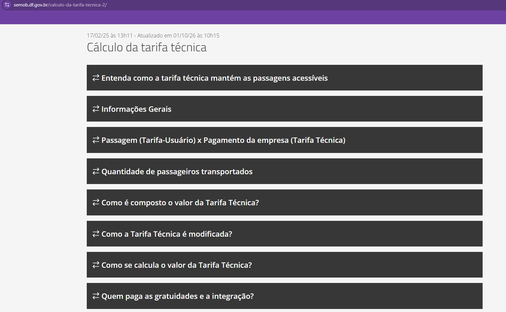
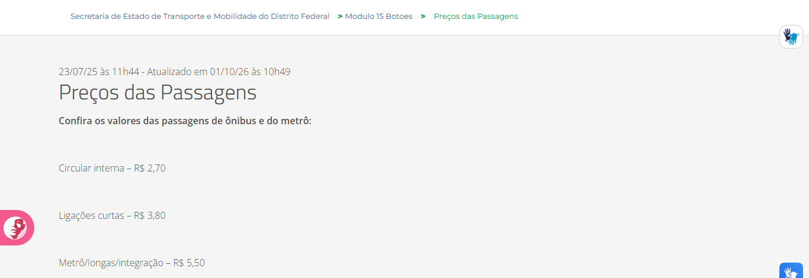
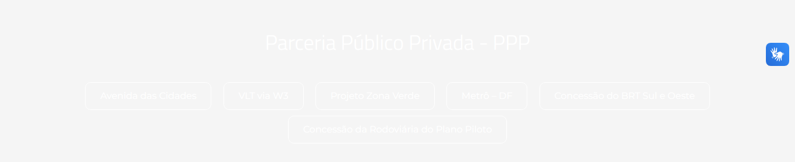
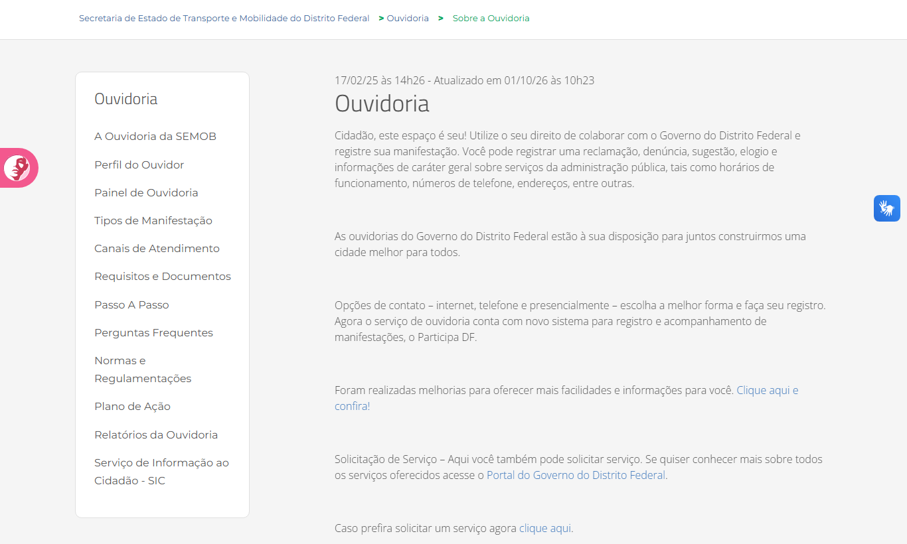
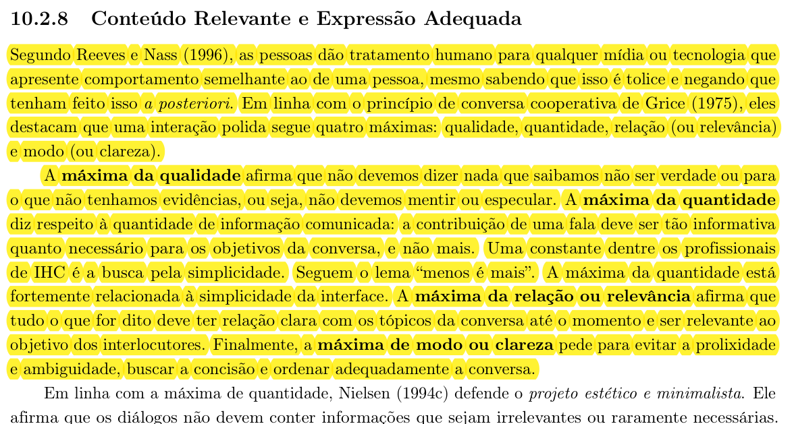
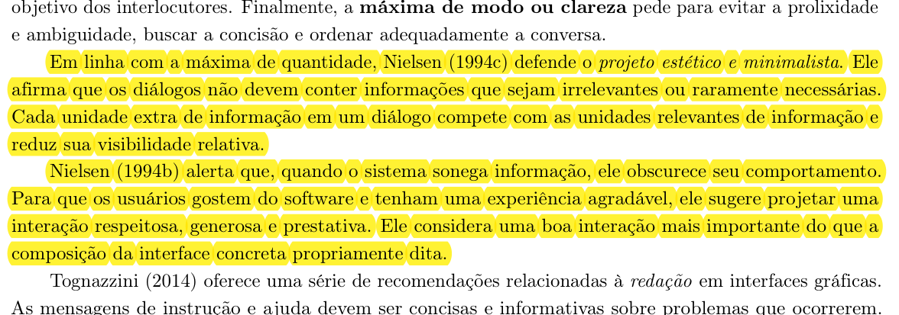
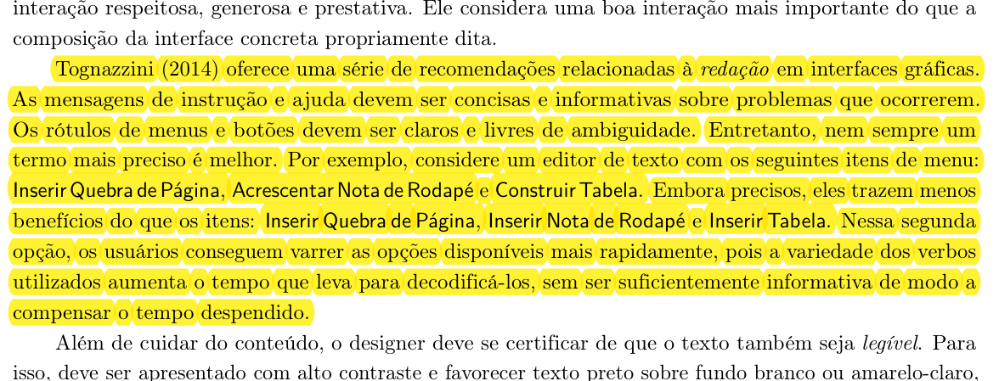
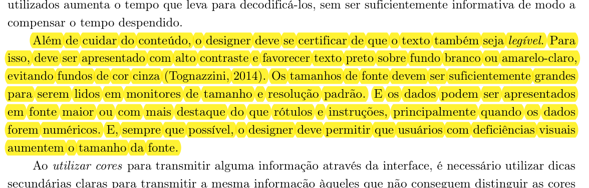
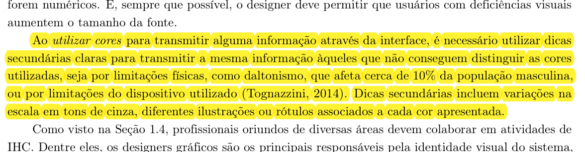
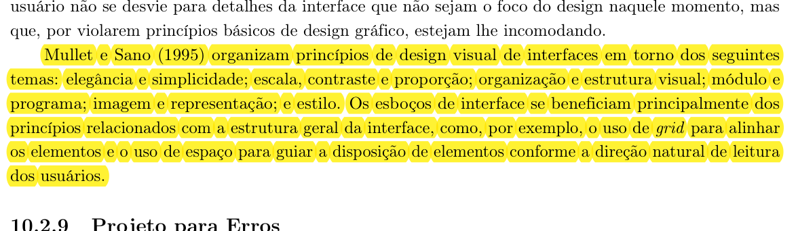

Conteúdo Relevante e Expressão Adequada no site da SEMOB-DF¶
Histórico de Versão e Contribuição¶
| Data | Versão | Descrição | Autor(es) | Revisor(es) |
|---|---|---|---|---|
| 05/10/2026 | 1.0 | Criação da análise de conteúdo relevante e expressão adequada do portal SEMOB-DF para a Entrega 3. | Lucas Araújo | Rodrigo Barbosa |
| 05/10/2026 | 1.1 | Inclusão de imagens dos trechos de referência das páginas 246–247 do livro-texto e atualização da numeração das imagens. | Lucas Araújo | Rodrigo Barbosa |
Site analisado: https://www.semob.df.gov.br/ (Secretaria de Estado de Transporte e Mobilidade do Distrito Federal)
Princípio: 10.2.8 Conteúdo Relevante e Expressão Adequada
Referência teórica: Barbosa, S. D. J. et al. (2021). Interação Humano-Computador e Experiência do Usuário, Cap. 10: Princípios e Diretrizes para o Design de IHC, pp. 246–247.
Contexto: Grupo 05, Interação Humano-Computador, UnB/FCTE, Professor André Barros de Sales, Semestre 2026.2. Artefato correspondente ao tópico 7 do item 12 do checklist da Entrega 3.
Data da inspeção: 05/10/2026, em navegador desktop (Google Chrome)
Autor do artefato: Lucas Araújo
1. O princípio segundo o livro¶
O princípio de Conteúdo Relevante e Expressão Adequada orienta o sistema a oferecer as informações necessárias à tarefa e apresentá-las de forma clara e respeitosa (Barbosa et al., 2021, Seção 10.2.8). Além de encontrar uma informação correta, o usuário precisa entender o que ela significa e como pode ajudá-lo. Textos difíceis, siglas sem explicação e elementos pouco legíveis podem atrapalhar esse processo.
No portal da SEMOB-DF, esse princípio se aplica à redação sobre serviços e normas e à apresentação de tarifas, itinerários, horários e canais de atendimento.
A análise se apoia nas recomendações apresentadas por Barbosa et al. (2021, pp. 246–247). As imagens 01 a 06 mostram os trechos do livro que fundamentam os quatro tópicos a seguir:
1.1. A interação como conversa cooperativa (Máximas de Grice)¶
Segundo Reeves e Nass (1996 apud Barbosa et al., 2021), as pessoas atribuem comportamentos e expectativas sociais humanas à sua interação com mídias e computadores. A comunicação da interface deve, por isso, ajudar o usuário e respeitar sua atenção. Barbosa et al. (2021) relacionam essa ideia às quatro máximas conversacionais de Grice (1975):
- Máxima da Qualidade: não dizer nada que se saiba não ser verdadeiro ou para o qual não haja evidências que sustentem a informação (não mentir ou especular). No portal da SEMOB-DF, valores tarifários, regras de integração e tabelas de horários devem estar de acordo com as informações oficiais, com indicação da data de atualização.
- Máxima da Quantidade: a contribuição de uma fala ou diálogo deve ser tão informativa quanto o necessário para os objetivos da tarefa corrente, e não mais do que isso. Os autores de IHC resumem esse princípio no lema "menos é mais", voltado à simplicidade da interface.
- Máxima da Relação (ou Relevância): tudo o que for exibido ou solicitado deve manter estreita relação com os tópicos da conversa e com o objetivo central do usuário. Por exemplo, quem busca saber o preço de uma passagem precisa ver o valor aplicável ao seu itinerário de imediato, em vez de ser obrigado a ler contratos de concessão ou fórmulas de reajuste técnico.
- Máxima de Modo (ou Clareza): evitar textos longos sem necessidade e expressões ambíguas. As informações devem seguir uma ordem lógica, com termos conhecidos pelo público e explicações para siglas ou palavras técnicas.
A imagem 01, reunida na seção de Fotos de Referência, apresenta as máximas de Grice e sua relação com a interação entre pessoas e computadores.
1.2. Projeto estético e minimalista¶
Relacionado à máxima da quantidade, o projeto estético e minimalista de Nielsen (1994c apud Barbosa et al., 2021) recomenda evitar informações irrelevantes ou raramente necessárias nos diálogos da interface. O livro explica essa recomendação da seguinte forma:
"Cada unidade extra de informação em um diálogo compete com as unidades relevantes de informação e reduz sua visibilidade relativa." (Nielsen, 1994c apud Barbosa et al., 2021, p. 246)
Contudo, Nielsen (1994b apud Barbosa et al., 2021) adverte que o minimalismo não deve significar sonegação de informação: quando o sistema esconde detalhes essenciais, ele obscurece seu próprio comportamento e prejudica a confiança do cidadão. Uma boa interface deve proporcionar uma interação respeitosa, generosa e prestativa, organizando a informação em camadas progressivas.
Na imagem 02, reunida na seção de Fotos de Referência, o livro relaciona o minimalismo à necessidade de manter as informações essenciais disponíveis.
1.3. Redação em interfaces gráficas, economia cognitiva e legibilidade¶
Tognazzini (2014 apud Barbosa et al., 2021) enfatiza o cuidado com a redação em interfaces:
- Instruções e mensagens de ajuda: Devem ser concisas, informativas e focadas na resolução de problemas concretos.
- Rótulos de menus e botões: Devem ser unívocos, descritivos e livres de ambiguidade.
- Economia cognitiva: Usar palavras diferentes para a mesma ação pode dificultar a leitura. Manter verbos familiares, como em "Consultar linhas", "Consultar horários" e "Consultar tarifas", ajuda o usuário a reconhecer as opções mais rapidamente.
- Legibilidade e Contraste: Textos devem oferecer alto contraste perceptivo, favorecendo caracteres escuros sobre fundos brancos ou claros e evitando fundos cinza (Tognazzini, 2014). Os tamanhos de fonte devem ser confortáveis para telas de desktop e mobile, permitindo ampliação por tecnologia assistiva.
- Destaque a dados reais: Informações concretas e dados numéricos (como preços de passagens e números de linhas) devem receber destaque visual e tipográfico maior do que rótulos e instruções contextuais.
- Uso não exclusivo da cor: Tognazzini (2014 apud Barbosa et al., 2021) recomenda que a cor seja acompanhada de outras pistas, como ícones, textos ou diferenças em tons de cinza. O livro menciona que o daltonismo afeta cerca de 10% da população masculina, o que reforça a necessidade de apresentar a informação de mais de uma forma.
A imagem 03, reunida na seção de Fotos de Referência, apresenta as orientações sobre redação e escolha de palavras nos menus.
As recomendações sobre contraste, tamanho de fonte e destaque dos dados aparecem na imagem 04, reunida na seção de Fotos de Referência.
A imagem 05, reunida na seção de Fotos de Referência, mostra a importância de acompanhar as cores com outras pistas de informação.
1.4. Princípios de design visual e organização espacial¶
Mullet e Sano (1995 apud Barbosa et al., 2021) organizam os princípios do design visual em seis dimensões interligadas:
- Elegância e simplicidade;
- Escala, contraste e proporção;
- Organização e estrutura visual;
- Módulo e programa;
- Imagem e representação;
- Estilo.
O respeito a esses princípios evita que a atenção do usuário seja dispersa por ruídos gráficos. O uso criterioso de grids de alinhamento e do espaço em branco organiza os blocos visuais e conduz os olhos do usuário de acordo com o fluxo natural de leitura.
A imagem 06, reunida na seção de Fotos de Referência, apresenta os princípios de design visual e as orientações sobre alinhamento e espaço.
2. Como a inspeção foi realizada¶
A avaliação foi conduzida por meio de inspeção semiótica e documental nas seções do portal da SEMOB-DF mais frequentadas por passageiros e cidadãos, cruzando os elementos da interface com os critérios de Barbosa et al. (2021, Seção 10.2.8).
Tabela 1 — Escopo e áreas inspecionadas no portal
| Área analisada | Endereço / Referência | Foco da inspeção sob o Princípio 7 |
|---|---|---|
| Página inicial | https://www.semob.df.gov.br/ | Cabeçalho, clareza dos menus, contraste de seções (banner e PPP) e links de acesso rápido. |
| Tarifas e Preços | /precos-das-passagens e /calculo-da-tarifa-tecnica-2 | Destaque tipográfico dos valores reais, clareza das categorias e densidade do texto explicativo. |
| Canais de atendimento | /ouvidoria | Objetividade das instruções, textos de links e botões de ação do cidadão. |
| DF no Ponto | https://dfnoponto.com.br/ | Clareza na descrição das ferramentas e alinhamento do vocabulário à rotina do passageiro. |
Escala de gravidade adotada: - Alta: O problema de expressão ou conteúdo compromete criticamente a legibilidade ou impede o usuário de completar sua tarefa com autonomia; - Média: O problema confunde o usuário, impõe sobrecarga cognitiva, exige decifração de jargão ou atrasa a navegação; - Baixa: Problema cosmético ou secundário de apresentação que não chega a comprometer a conclusão da tarefa.
3. Pontos positivos observados¶
A inspeção identificou pontos positivos no portal que dialogam diretamente com as recomendações de Conteúdo Relevante e Expressão Adequada, sintetizados na Tabela 2.
Tabela 2 — Pontos positivos encontrados no portal da SEMOB-DF
| ID | Observação no Portal | Relação com o princípio (Barbosa et al., 2021) |
|---|---|---|
| P1 | Presença do controle de acessibilidade Aa no cabeçalho fixo. | Contribui para a flexibilidade tipográfica e legibilidade recomendada por Tognazzini, permitindo que usuários com baixa visão ajustem a escala de leitura. |
| P2 | Campo de busca principal com texto de instrução explícito: "Digite aqui o que você procura". | Atende à Máxima de Modo (Grice) e à recomendação de Tognazzini de instruir o usuário de forma concisa sobre como agir. |
| P3 | Página de preços das passagens estruturada por categorias de deslocamento (Circular interna, Alimentadora e Troncal). | Conteúdo enxuto e relevante para o passageiro leigo, respeitando as Máximas da Quantidade e Relevância ao separar os tipos de viagem. |
| P4 | Ouvidoria explicita os tipos de manifestação (Reclamação, Sugestão, Elogio, Denúncia e Informação). | Linguagem cidadã orientada à intenção do usuário, tornando clara a finalidade de cada canal de atendimento. |
| P5 | Seção de Tarifa Técnica estruturada em formato de perguntas e respostas frequentes. | Organização lógica do conteúdo complexo em blocos temáticos, auxiliando a escaneabilidade do texto. |
| P6 | Apresentação do serviço DF no Ponto correlacionando ferramentas às necessidades de mobilidade (busca por linha, horário e parada). | Vocabulário orientado à ação prática do usuário, alinhando a descrição ao objetivo de mobilidade do cidadão. |
4. Problemas encontrados¶
Resumo das violações¶
A Tabela 3 consolida as falhas de conteúdo e expressão identificadas durante a inspeção do portal.
Tabela 3 — Síntese dos problemas encontrados
| ID | Problema Identificado | Diretriz Violada (Barbosa et al., 2021) | Gravidade |
|---|---|---|---|
| CR1 | Redação administrativa excessivamente densa e prolixa na explicação de tarifas técnicas. | Máxima de Modo e Quantidade (Grice); Minimalismo Estético (Nielsen). | Média |
| CR2 | Siglas governamentais e marcas de sistemas utilizadas sem contexto ou expansão. | Máxima de Modo (Grice); Clareza de Rótulos e Economia Cognitiva (Tognazzini). | Média |
| CR3 | Ausência de destaque tipográfico hierárquico nos valores das tarifas de passagens. | Destaque de Dados Reais (Tognazzini); Escala e Contraste (Mullet e Sano). | Média |
| CR4 | Baixo contraste crítico e legibilidade prejudicada no bloco de Parcerias Público-Privadas (PPP). | Contraste e Legibilidade (Tognazzini); Contraste e Proporção (Mullet e Sano). | Alta |
| CR5 | Links e botões com rótulos genéricos dependentes do texto ao redor ("clique aqui", "Consultar"). | Máxima de Modo (Grice); Rótulos Unívocos e Informativos (Tognazzini). | Média |
CR1. Redação administrativa densa e jurídica (Gravidade Média)¶
Descrição: Na página de Cálculo da Tarifa Técnica, a explicação dos custos operacionais do transporte é apresentada em parágrafos longos repletos de vocabulário contratual especializado ("equilíbrio econômico-financeiro", "metodologia paramétrica de remuneração", "revisão ordinária e extraordinária"). Embora a explicação detalhada seja fundamental para a transparência pública, ela é exposta em bloco único sem um sumário em linguagem simples para o passageiro comum.
Por que é um problema: Viola a Máxima de Modo (clareza e concisão) e a Máxima da Quantidade (Grice). O excesso de jargões técnicos afasta o usuário primário (o passageiro), que apenas deseja compreender a diferença entre a tarifa pública paga na catraca e o custo técnico remunerado às empresas de ônibus. Conforme Nielsen (1994c), o excesso de informação compete diretamente com a atenção dispensada aos dados fundamentais.
Recomendação: Implementar uma abordagem em camadas: introduzir o tópico com um infográfico ou resumo em linguagem cidadã direta ("Como o valor da sua passagem é calculado"), reservando os detalhamentos matemáticos e os anexos dos editais para seções expansíveis ou abas secundárias destinadas a pesquisadores e órgãos de controle.

Imagem 07 — Estrutura de tópicos da Tarifa Técnica com seções extensas e termos técnicos.CR2. Siglas herméticas e nomes de sistemas sem significado imediato (Gravidade Média)¶
Descrição: O menu principal e os blocos de navegação da página inicial apresentam siglas governamentais sem nenhuma indicação do que significam ou de qual tarefa o usuário pode realizar. Exemplos identificados: - "Dados STPC" e "PDTU" no menu superior; - "Resoluções – CTPC" e "Atas – CTPC"; - Botões e logotipos identificados apenas como "DFLEGIS", "SICOPWEB" e "SINJ-DF".
Tabela 4 — Tratamento recomendado para siglas e jargões institucionais
| Sigla / Rótulo Atual | Significado Técnico | Expressão Recomendada no Redesign (Linguagem Cidadã) |
|---|---|---|
| STPC | Sistema de Transporte Público Coletivo | Dados do Transporte Coletivo (STPC) |
| CTPC | Conselho de Transporte Público Coletivo | Conselho de Transporte (CTPC): Atas e Resoluções |
| PDTU | Plano Diretor de Transporte Urbano | Plano Diretor de Mobilidade (PDTU) |
| DFLEGIS | Base de Legislação do Distrito Federal | Consultar Legislação do DF (DFLEGIS) |
| SINJ-DF | Sistema Integrado de Normas Jurídicas do DF | Normas Jurídicas do DF (SINJ-DF) |
| SICOPWEB | Sistema de Controle de Processos | Acompanhar Processos (SICOPWEB) |
Por que é um problema: Contraria frontalmente a Máxima de Modo (Grice) e a diretriz de rótulos unívocos e economia cognitiva de Tognazzini (2014). O cidadão é obrigado a adivinhar a estrutura burocrática do Estado para saber onde clicar. A ausência de contexto textual claro obriga o usuário a despender esforço cognitivo em tentativas e erros.
Recomendação: Adotar como padrão de microcopy a fórmula: [Ação em Linguagem Cidadã] + (Sigla Oficial). Menus e botões devem explicitar a finalidade da ferramenta antes da sigla institucional.
Imagem 08 — Cabeçalho e menu da SEMOB-DF com siglas (Dados STPC, PDTU) sem explicação para o usuário.
CR3. Ausência de destaque tipográfico nos valores das passagens (Gravidade Média)¶
Descrição: Na página Preços das Passagens, cada categoria de itinerário e o seu respectivo preço monetário (ex.: "Circular interna – R$ 2,70", "Linhas de ligação – R$ 3,80", "Linhas troncais e metrô – R$ 5,50") são exibidos em linhas de texto corrido simples, com o mesmo peso tipográfico e mesma cor de fonte dos rótulos descritivos.
Por que é um problema: Tognazzini (2014) afirma enfaticamente que dados reais e numéricos essenciais para a tomada de decisão do usuário devem receber destaque tipográfico superior aos rótulos e instruções contextuais. Além disso, segundo Mullet e Sano (1995), a ausência de contraste de escala e proporção retarda o escaneamento visual da página: quem está na parada de ônibus precisa identificar o valor monetário instantaneamente, sem ler cada frase na íntegra.
Recomendação: Reorganizar a apresentação das tarifas em cartões (cards) destacados ou tabela limpa, aplicando tipografia robusta (tamanho maior e peso bold) sobre os valores monetários (R$ 2,70, R$ 5,50), acompanhados de ícones visuais representativos de cada modalidade de linha.

Imagem 09 — Valores monetários das tarifas sem diferenciação de peso ou destaque visual em relação aos nomes das linhas.CR4. Baixo contraste e legibilidade comprometida na seção PPP (Gravidade Alta)¶
Descrição: No bloco dedicado a Parcerias Público Privadas – PPP na página inicial, os textos explicativos e os botões com borda fina encontram-se em branco aplicados sobre um plano de fundo excessivamente claro. Em condições reais de luminosidade ou caso a imagem de fundo falhe em carregar, o conteúdo torna-se praticamente ilegível.
Por que é um problema: Viola a diretriz de contraste visual e legibilidade de Tognazzini (2014) e os princípios de contraste e visibilidade de Mullet e Sano (1995). Uma mensagem perde completamente a relevância se sua expressão material não puder ser decodificada pelo olho humano. Usuários em trânsito, expostos à luz solar direta sobre telas de smartphones, não conseguem ler as opções desse bloco.
Recomendação: Garantir conformidade com as diretrizes WCAG 2.1 nível AA (taxa de contraste mínima de 4.5:1 para texto normal e 3:1 para textos grandes e componentes de interface). Estabelecer uma camada de fundo sólida de reserva (fallback) em tom escuro para assegurar a legibilidade mesmo na eventual falha de carregamento de imagens.

Imagem 10 — Texto e elementos de contorno brancos sobre fundo claro na seção PPP, inviabilizando a leitura confortável.CR5. Rótulos genéricos em links e chamadas para ação (Gravidade Média)¶
Descrição: Na página de Ouvidoria, encontram-se hiperlinks com rótulos vagos e descontextualizados, tais como "Clique aqui e confira!" e "clique aqui". Da mesma forma, nos cartões de serviços da Home, botões apresentam apenas a palavra genérica "Consultar".
Tabela 5 — Propostas de reescrita para rótulos genéricos
| Rótulo Atual | Contexto da Página | Redação Recomendada no Redesign |
|---|---|---|
| "Clique aqui e confira!" | Ouvidoria / Sistema Participa DF | Acessar o portal Participa DF |
| "clique aqui" | Registro de Manifestação | Registrar solicitação na Ouvidoria |
| "Consultar" | Bloco SICOPWEB | Consultar andamento de processo |
| "Clique aqui" | Legislação e Portarias | Visualizar portarias do transporte |
Por que é um problema: Rótulos como "clique aqui" violam a Máxima de Modo (clareza) e as diretrizes de redação de Tognazzini (2014), que determinam que os rótulos de botões e links devem ser compreensíveis por si mesmos e informar exatamente o destino ou a consequência da ação. Além disso, tecnologias assistivas (leitores de tela para pessoas com deficiência visual) que listam apenas os links da página deixam o usuário desorientado diante de uma sequência de links indistintos rotulados como "clique aqui".
Recomendação: Redigir links com verbo de ação associado ao objeto específico ("Ver tarifas", "Registrar reclamação", "Acessar o Participa DF"), abolindo instruções mecânicas sobre o dispositivo de entrada (como "clique" ou "toque").

Imagem 11 — Links de texto "Clique aqui e confira!" na Ouvidoria, desprovidos de significado autônomo.5. Síntese das recomendações para o projeto do Grupo 05¶
A partir dos pontos positivos e das violações identificadas no portal da SEMOB-DF, a Tabela 6 estabelece as diretrizes que a equipe do Grupo 05 deve incorporar obrigatoriamente no Guia de Estilo e na futura prototipação do sistema.
Tabela 6 — Diretrizes de Conteúdo Relevante e Expressão Adequada para o redesign
| Dimensão de IHC | Diretriz para o Projeto do Grupo 05 | Aplicação Concreta no Redesign |
|---|---|---|
| Linguagem Cidadã (Plain Language) | Substituir o jargão burocrático e jurídico por linguagem orientada aos objetivos do usuário comum (CR1). | Resumos objetivos no topo de páginas de normas e serviços; termos em linguagem simples com detalhamentos secundários opcionais. |
| Vocabulário e Siglas | Não utilizar siglas isoladas em menus e botões sem explicar seu significado (CR2). | Padrão unificado: nome do serviço por extenso acompanhado da sigla entre parênteses em menus e títulos. |
| Hierarquia Tipográfica | Conceder destaque visual evidente para dados numéricos importantes (CR3). | Valores de passagens (R$ 5,50), tempos de espera e números de linhas formatados com maior escala de fonte e peso tipográfico. |
| Contraste e Legibilidade | Garantir contraste seguro (mínimo de 4.5:1) em qualquer cenário de iluminação (CR4). | Textos escuros sobre fundos neutros claros; proibição de fundos cinza degradantes e uso de cor de reserva sólida sob imagens. |
| Microcopy de Ações | Utilizar rótulos informativos que contenham verbo e objeto da ação (CR5). | Substituição de rótulos genéricos como "Clique aqui"; botões descritivos como "Consultar horários", "Recarregar cartão". |
| Acessibilidade Cromática | Jamais transmitir estados ou alertas apenas por meio de cores. | Indicadores de status de ônibus (ex.: adiantado/atrasado) devem combinar cores com ícones claros e rótulos em texto. |
| Escaneabilidade e Grids | Estruturar telas com alinhamento em grid e áreas de respiro visual. | Organização de horários e itinerários em blocos limpos, facilitando a leitura rápida em telas de celulares na rua. |
6. Conclusão¶
O portal da SEMOB-DF reúne informações importantes para a população e oferece recursos de busca e acessibilidade. Nas páginas analisadas, porém, a forma de apresentar o conteúdo pode dificultar a consulta: há textos administrativos extensos, siglas pouco explicadas, valores de tarifas sem destaque e links com rótulos genéricos. O contraste da seção PPP também prejudica a leitura no registro apresentado.
As recomendações de Barbosa et al. (2021) ajudam a orientar essas melhorias: selecionar o conteúdo de acordo com a tarefa, escrever com clareza, destacar os dados importantes e cuidar da legibilidade. O Grupo 05 pode incorporar essas orientações ao Guia de Estilo e ao protótipo de redesign, buscando facilitar tarefas como consultar uma tarifa, encontrar uma linha e acessar um canal de atendimento.
7. Declaração sobre o Uso de IA Generativa¶
Em cumprimento às normas de conduta acadêmica da SBC e ao Plano de Ensino da disciplina, declara-se que o Gemini, uma ferramenta de Inteligência Artificial Generativa, foi empregado para auxílio na estruturação textual, refinamento de clareza formal e formatação Markdown do presente documento. Toda a fundamentação teórica, o levantamento empírico de dados, as tomadas de decisão e as análises críticas permaneceram sob responsabilidade exclusiva dos integrantes da equipe.
8. Fotos de Referência¶

Imagem 01 — Reeves e Nass e as quatro máximas conversacionais de Grice. Fonte: Barbosa et al. (2021, p. 246, subseção 10.2.8).

Imagem 02 — Projeto estético e minimalista e interação respeitosa, generosa e prestativa. Fonte: Barbosa et al. (2021, p. 246, subseção 10.2.8).

Imagem 03 — Redação de instruções, rótulos e economia cognitiva. Fonte: Barbosa et al. (2021, p. 246, subseção 10.2.8).

Imagem 04 — Contraste, tamanho de fonte e destaque dos dados numéricos. Fonte: Barbosa et al. (2021, p. 246, subseção 10.2.8).

Imagem 05 — Uso de cores com dicas secundárias de informação. Fonte: Barbosa et al. (2021, p. 246, subseção 10.2.8).

Imagem 06 — Princípios de design visual, grids e espaço para orientar a leitura. Fonte: Barbosa et al. (2021, p. 247, subseção 10.2.8).
9. Referências Bibliográficas¶
- BARBOSA, Simone Diniz Junqueira; SILVA, Bruno Santana da; SILVEIRA, Milene Selbach; GASPARINI, Isabela; DARIN, Ticianne; BARBOSA, Gabriel Diniz Junqueira. Interação Humano-Computador e Experiência do Usuário. Rio de Janeiro: Autopublicação, 2021. Capítulo 10: Princípios e Diretrizes para o Design de IHC, Subseção 10.2.8: Conteúdo Relevante e Expressão Adequada, pp. 246–247.
- DISTRITO FEDERAL. Secretaria de Estado de Transporte e Mobilidade. Portal da SEMOB-DF. Brasília, DF: SEMOB-DF, 2026. Disponível em: https://www.semob.df.gov.br/. Acesso em: 05 out. 2026.
- DISTRITO FEDERAL. Secretaria de Estado de Transporte e Mobilidade. Preços das Passagens. Brasília, DF: SEMOB-DF, 2026. Disponível em: https://www.semob.df.gov.br/precos-das-passagens. Acesso em: 05 out. 2026.
- DISTRITO FEDERAL. Secretaria de Estado de Transporte e Mobilidade. Cálculo da Tarifa Técnica. Brasília, DF: SEMOB-DF, 2026. Disponível em: https://www.semob.df.gov.br/calculo-da-tarifa-tecnica-2. Acesso em: 05 out. 2026.
- DISTRITO FEDERAL. Secretaria de Estado de Transporte e Mobilidade. Ouvidoria da SEMOB-DF. Brasília, DF: SEMOB-DF, 2026. Disponível em: https://www.semob.df.gov.br/ouvidoria. Acesso em: 05 out. 2026.
- GRICE, H. Paul. Logic and Conversation. In: Syntax and Semantics, volume 3: Speech Acts, pp. 41–58. Academic Press, 1975.
- MULLET, Kevin; SANO, Darrell. Designing Visual Interfaces: Communication Oriented Techniques. Englewood Cliffs: Prentice-Hall, 1995.
- NIELSEN, Jakob. Usability Engineering. San Francisco: Morgan Kaufmann Publishers, 1994c.
- REEVES, Byron; NASS, Clifford. The Media Equation: How People Treat Computers, Television, and New Media Like Real People and Places. Stanford: Cambridge University Press, 1996.
- TOGNAZZINI, Bruce. First Principles of Interaction Design (Revised & Expanded). AskTog, 2014. Disponível em: https://asktog.com/atc/principles-of-interaction-design/. Acesso em: 05 out. 2026.